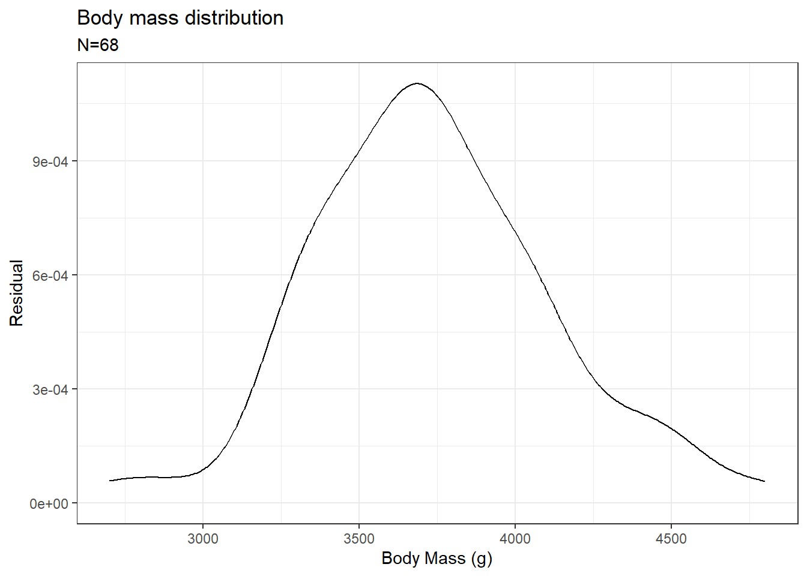

Parametric tests can only be used in datasets having two groups, which fulfill the following conditions;
The data should follow a normal distribution
The groups should have equal variances (homoscedasticity)
The dependent variable should be of an ordinal scale, which means it can be arranged in a defined order
The two groups should be independent of each other
Now we will learn how to do some of the parametric tests in R. For this tutorial, we will be using the penguins dataset from the {palmerpenguins} package in R. Before we begin trying out the test, we will first have to check if the data is normally distributed. Using various normality tests, we can check if our data is normally distributed. On the other hand, we can also check if our data is normally distributed by simply plotting the data or by using a qq-plot.
1.1 Density plot, qq-plot and residual plot
Now we will plot a histogram of body mass in Chinstrap penguins.
The plot is similar to a normal distribution. We can also see the same by plotting a qq-plot
#install.packages("palmerpenguins")#install.packages("tidyverse")#install.packages("ggpubr")library(palmerpenguins)library(tidyverse)library(ggpubr)penguins %>%filter(species =="Chinstrap") %>%ggqqplot(x ="body_mass_g", color ="species")
If the qq-plot shows data points aligning within the reference line, then we can conclude that the data points follow a normal distribution.
We can also test the same by plotting a residual plot which shows the distribution of residual distances of the data points. Residual distance shows how far each point is from the mean value.
#install.packages("palmerpenguins")#install.packages("tidyverse")#install.packages("ggpubr")library(palmerpenguins)library(tidyverse)library(ggpubr)penguins %>%filter(species =="Chinstrap") %>%ggplot(aes(x = body_mass_g)) +xlab("Body Mass (g)") +ylab("Residual") +ggtitle("Body mass distribution") +geom_density() +labs(subtitle =paste0("N=",penguins %>%filter(species =="Chinstrap") %>%nrow())) +theme_bw()

As we found earlier, the plot resembles a normal distribution.
Now let us do some normality tests to check if the data we have is following a normal distribution. In normality tests, the null hypothesis is that the distribution is normal and the alternate hypothesis is that it is not.
1.2 Shapiro-Wilk’s test
We will be doing the Kolmogorov-Smirnov (K-S) normality test and Shapiro-Wilk’s test. The Kolmogorov–Smirnov test is best for sample sizes ≥ 50 and Shapiro-Wilk’s test is best for < 50.
Shapiro-Wilk normality test
data: pen_chin$body_mass_g
W = 0.98449, p-value = 0.5605
From the output, the p-value > 0.05 implies that the distribution of the data is not significantly different from a normal distribution. In other words, we can assume normality.
1.3 Kolmogorov-Smirnov (K-S) normality test
The Kolmogorov-Smirnov test requires a continuous distribution to function properly. So let us do the test on dummy data.
set.seed(123)x <-rnorm(50)ks.test(x,"pnorm")
Exact one-sample Kolmogorov-Smirnov test
data: x
D = 0.073034, p-value = 0.9347
alternative hypothesis: two-sided
As p > 0.05, we can confirm that the data is normally distributed.
2 Parametric test
2.1 one sample t-test
The student’s t-test is a very popular parametric. In the following example, we will be doing a one-sample t-test. We will be checking if the body masses of Gentoo penguins are significantly different from 4500g.
pen_gen <- penguins %>%filter(species=="Gentoo")# one sample t-testt.test(pen_gen$body_mass_g, mu =4500)
One Sample t-test
data: pen_gen$body_mass_g
t = 12.672, df = 122, p-value < 2.2e-16
alternative hypothesis: true mean is not equal to 4500
95 percent confidence interval:
4986.034 5165.998
sample estimates:
mean of x
5076.016
So the body masses of Gentoo are significantly large than 4500g.
2.2 two sample t-test
If we are comparing the means of two groups with equal variance, then we do a two-sample t-test. We will compare the body weights of Gentoo to Chinstrap species and see if their mean body masses differ significantly.
Two Sample t-test
data: pen_gen$body_mass_g and pen_chin$body_mass_g
t = 19.103, df = 189, p-value < 2.2e-16
alternative hypothesis: true difference in means is not equal to 0
95 percent confidence interval:
1204.258 1481.598
sample estimates:
mean of x mean of y
5076.016 3733.088
The test results show that the body masses of these two species of penguins differ significantly from each other.
2.3 welsh’s t-test
Now, normally we need to have the variances of two groups the same to perform a two-sample t-test. If the variances are not the same, then we could still do a t-test. For Welch’s t-test, variance doesn’t need to be the same for the two groups in question.
Welch Two Sample t-test
data: pen_gen$body_mass_g and pen_chin$body_mass_g
t = 20.628, df = 170.4, p-value < 2.2e-16
alternative hypothesis: true difference in means is not equal to 0
95 percent confidence interval:
1214.416 1471.440
sample estimates:
mean of x mean of y
5076.016 3733.088
2.4 paired t-test
Now if we have paired data, then to compare between two groups, we can do a paired t-test. Paired data means that the data in the two groups came from the same source. Here we will be comparing Gentoo penguin bill lengths versus bill depth. Here both the bill length and bill depth are measured from the same set of individuals.
Paired t-test
data: pen_gen$bill_length_mm and pen_gen$bill_depth_mm
t = 140.73, df = 122, p-value < 2.2e-16
alternative hypothesis: true mean difference is not equal to 0
95 percent confidence interval:
32.06527 32.98026
sample estimates:
mean difference
32.52276
3 References
Ghasemi, A., & Zahediasl, S. (2012). Normality tests for statistical analysis: a guide for non-statisticians. International journal of endocrinology and metabolism, 10(2), 486–489. https://doi.org/10.5812/ijem.3505 Link
Livingston, E. H. (2004). Who was student and why do we care so much about his T-test?1. Journal of Surgical Research, 118(1), 58–65. https://doi.org/10.1016/j.jss.2004.02.003 Link
---title: "Chapter 7: Parametric tests and assumptions"description: "Learn about parametric tests and assumptions"date: "05/21/2022"format: htmlcategories: [statistics, basic statistics]draft: true---```{r}#| include: falsepaged_print <-function(x, options) { knitr::asis_output( rmarkdown:::paged_table_html(x, options =attr( x,"options" )),meta =list(dependencies = rmarkdown::html_dependency_pagedtable()) )}registerS3method("knit_print", "data.frame", paged_print,envir =asNamespace("knitr"))```::: {layout-ncol="1"}{.preview-image}:::## Parametric test assumptionsParametric tests can only be used in datasets having two groups, which fulfill the following conditions;1. The data should follow a normal distribution2. The groups should have equal variances (homoscedasticity)3. The dependent variable should be of an ordinal scale, which means it can be arranged in a defined order4. The two groups should be independent of each otherNow we will learn how to do some of the parametric tests in R. For this tutorial, we will be using the `penguins` dataset from the `{palmerpenguins}` package in R. Before we begin trying out the test, we will first have to check if the data is normally distributed. Using various normality tests, we can check if our data is normally distributed. On the other hand, we can also check if our data is normally distributed by simply plotting the data or by using a `qq-plot`.### Density plot, qq-plot and residual plotNow we will plot a histogram of body mass in Chinstrap penguins.```{r}#install.packages("palmerpenguins")#install.packages("tidyverse")#install.packages("ggpubr")library(palmerpenguins)library(tidyverse)library(ggpubr)penguins %>%filter(species =="Chinstrap") %>%ggplot(aes(x = body_mass_g)) +xlab("Body Mass (g)") +ylab("Frequency") +ggtitle("Body mass distribution") +geom_histogram(bins =25) +labs(subtitle =paste0("N=",penguins %>%filter(species =="Chinstrap") %>%nrow())) +theme_bw()```The plot is similar to a normal distribution. We can also see the same by plotting a `qq-plot````{r}#install.packages("palmerpenguins")#install.packages("tidyverse")#install.packages("ggpubr")library(palmerpenguins)library(tidyverse)library(ggpubr)penguins %>%filter(species =="Chinstrap") %>%ggqqplot(x ="body_mass_g", color ="species")```If the `qq-plot` shows data points aligning within the reference line, then we can conclude that the data points follow a normal distribution.We can also test the same by plotting a residual plot which shows the distribution of residual distances of the data points. Residual distance shows how far each point is from the mean value.```{r}#install.packages("palmerpenguins")#install.packages("tidyverse")#install.packages("ggpubr")library(palmerpenguins)library(tidyverse)library(ggpubr)penguins %>%filter(species =="Chinstrap") %>%ggplot(aes(x = body_mass_g)) +xlab("Body Mass (g)") +ylab("Residual") +ggtitle("Body mass distribution") +geom_density() +labs(subtitle =paste0("N=",penguins %>%filter(species =="Chinstrap") %>%nrow())) +theme_bw()```As we found earlier, the plot resembles a normal distribution.Now let us do some normality tests to check if the data we have is following a normal distribution. In normality tests, the null hypothesis is that the distribution is normal and the alternate hypothesis is that it is not.### Shapiro-Wilk's testWe will be doing the `Kolmogorov-Smirnov (K-S) normality test` and `Shapiro-Wilk’s test`. The Kolmogorov--Smirnov test is best for sample sizes ≥ 50 and Shapiro-Wilk's test is best for \< 50.```{r}pen_chin <- penguins %>%filter(species =="Chinstrap")shapiro.test(pen_chin$body_mass_g)```From the output, the p-value \> 0.05 implies that the distribution of the data is not significantly different from a normal distribution. In other words, we can assume normality.### Kolmogorov-Smirnov (K-S) normality testThe Kolmogorov-Smirnov test requires a continuous distribution to function properly. So let us do the test on dummy data.```{r}set.seed(123)x <-rnorm(50)ks.test(x,"pnorm")```As p \> 0.05, we can confirm that the data is normally distributed.## Parametric test### one sample t-testThe student's t-test is a very popular parametric. In the following example, we will be doing a one-sample t-test. We will be checking if the body masses of Gentoo penguins are significantly different from 4500g.```{r}pen_gen <- penguins %>%filter(species=="Gentoo")# one sample t-testt.test(pen_gen$body_mass_g, mu =4500)```So the body masses of Gentoo are significantly large than 4500g.### two sample t-testIf we are comparing the means of two groups with equal variance, then we do a two-sample t-test. We will compare the body weights of Gentoo to Chinstrap species and see if their mean body masses differ significantly.```{r}pen_gen <- penguins %>%filter(species=="Gentoo")pen_chin <- penguins %>%filter(species=="Chinstrap")# two sample t-testt.test(pen_gen$body_mass_g, pen_chin$body_mass_g, var.equal = T)```The test results show that the body masses of these two species of penguins differ significantly from each other.### welsh's t-testNow, normally we need to have the variances of two groups the same to perform a two-sample t-test. If the variances are not the same, then we could still do a t-test. For Welch's t-test, variance doesn't need to be the same for the two groups in question.```{r}pen_gen <- penguins %>%filter(species=="Gentoo")pen_chin <- penguins %>%filter(species=="Chinstrap")# welsh's t-testt.test(pen_gen$body_mass_g, pen_chin$body_mass_g)```### paired t-testNow if we have paired data, then to compare between two groups, we can do a paired t-test. Paired data means that the data in the two groups came from the same source. Here we will be comparing Gentoo penguin bill lengths versus bill depth. Here both the bill length and bill depth are measured from the same set of individuals.```{r}pen_gen <- penguins %>%filter(species=="Gentoo")# paired t-testt.test(pen_gen$bill_length_mm, pen_gen$bill_depth_mm, paired = T)```## References1. Ghasemi, A., & Zahediasl, S. (2012). Normality tests for statistical analysis: a guide for non-statisticians. International journal of endocrinology and metabolism, 10(2), 486--489. https://doi.org/10.5812/ijem.3505 [Link](https://www.ncbi.nlm.nih.gov/pmc/articles/PMC3693611/)2. Livingston, E. H. (2004). Who was student and why do we care so much about his T-test?1. Journal of Surgical Research, 118(1), 58--65. https://doi.org/10.1016/j.jss.2004.02.003 [Link](https://www.sciencedirect.com/science/article/abs/pii/S0022480404000496)#### Last updated on {.unnumbered .unlisted}```{r}#| echo: falseSys.time()```<ahiddenhref="https://info.flagcounter.com/ynrK"><imgsrc="https://s11.flagcounter.com/count2/ynrK/bg_000000/txt_FFFFFF/border_F0F0F0/columns_5/maxflags_25/viewers_0/labels_1/pageviews_1/flags_0/percent_0/"alt="Flag Counter"border="0"/></a>